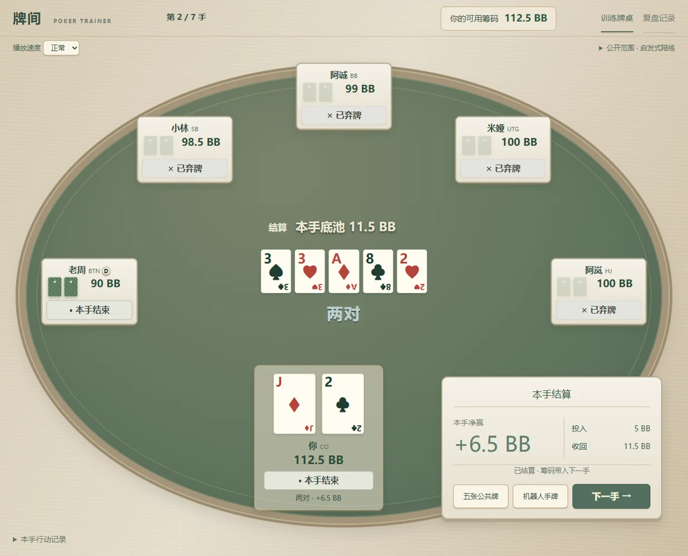

01PRODUCT PRACTICE / LOCAL PROTOTYPE
Poker Trainer
Making decisions easier to revisit after practice. A local training and review tool shaped around continuous sessions, saved history and action-by-action replay.
- Defined requirements, user flows and feature priorities
- Used Codex for implementation and interaction iteration
- Delivered a working local training and review flow
Python · SQLite · JavaScriptView project